सुविकल्प: Mine Repurposing Tool
Select factors and sub-factors to discover suitable repurposing options for your mining site
![Coal Controller Organisation emblem]()
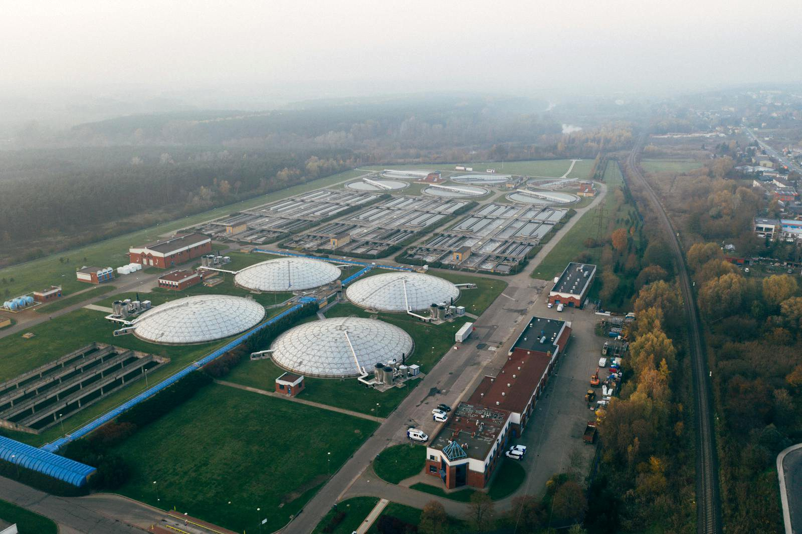
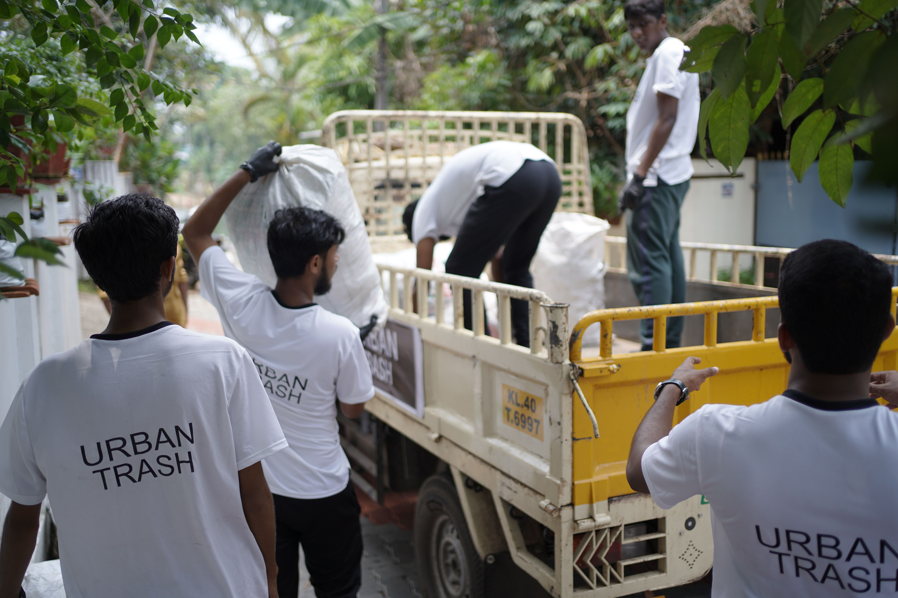
A Waste Recycling Centre is a circular-economy, employment-generating repurposing option that converts closed or abandoned coal mine land into a productive resource recovery and waste management infrastructure system. It can take the form of a dry-waste Material Recovery Facility (MRF), a Construction & Demolition (C&D) waste processing plant, a Refuse-Derived Fuel (RDF) preparation unit, a composting or bio-methanation facility, a repair and reuse centre, or an integrated circular-economy park — depending on the waste catchment, site conditions, funding model and community context.
Unlike heavy industrial or residential redevelopment, a Waste Recycling Centre uses large bufferable land parcels productively with low foundation intensity, supports Swachh Bharat Mission and circular economy objectives, enables local livelihoods for SHGs, waste-picker groups, FPOs, cooperatives and MSMEs, and converts mine-closure land into a long-term public-service and revenue-generating asset — integrating naturally with ecological restoration, green belts, solar rooftops and logistics infrastructure. Indian precedents include Indore's large dry-waste Material Recovery Facilities and the IL&FS Construction & Demolition waste recycling plant at Burari, Delhi — India's first C&D recycling facility — demonstrating commercial-scale resource recovery.
Strategic rationale, site suitability, and indicative scale for waste recycling and resource recovery on closed coal mine land.
This concept proposes the development of Waste Recycling Centre Zones on closed, reclaimed, or repurposed coal mine land as part of a sustainable mine-closure and post-mining land-use strategy.
The objective is to convert under-utilised mine land into a circular-economy, employment-generating, low-to-moderate footprint infrastructure system focused on:
Unlike heavy industrial redevelopment, a Waste Recycling Centre:
This aligns with India's mine-closure shift toward productive, community-oriented repurposing, as reflected in A.R.T.H.A., L.I.V.E.S and R.E.C.L.A.I.M. frameworks available through the Coal Controller Organisation's mine-closure handbook portal.
Waste recycling is particularly suited for closed coal mine areas because such sites often have large land parcels, controlled access, scope for buffer zones, internal roads, existing utilities and proximity to mining settlements, industrial clusters or urbanising towns.
The Solid Waste Management Rules, 2026 recognise Material Recovery Facilities as facilities for sorting solid waste and provide for faster land allocation, buffer zones for facilities above 5 TPD, online registration, monitoring, audits and restrictions on landfilling of recyclable or energy-recoverable waste.
| Benefit | Detail |
|---|---|
| Land reuse | Productive reuse of closed mine land without deep foundations or intensive habitation use |
| Circular economy | Supports waste-diversion from landfills and promotes material recovery |
| Local employment | Jobs in sorting, baling, processing, transport, repair, resale and quality control |
| SHG & waste-picker uplift | Strong livelihood potential for SHGs, informal waste workers, youth and local MSMEs |
| Multi-stream capability | Handles dry waste, plastic, paper, metal, glass, C&D waste, textile, RDF rejects and reusable goods |
| Sanitation improvement | Reduces illegal dumping and improves sanitation in nearby mining towns and villages |
| Revenue generation | Tipping fee, user fee, recyclables sale, compost, RDF, C&D aggregates, lease rentals, carbon / ESG benefits |
| Financing flexibility | Compatible with mine-owner CSR, district-level waste management, ULB partnerships and PPP models |
| Phased development | Can be phased from small MRF to integrated circular-economy park |
| Waste-picker formalisation | Supports formalisation of informal waste workers and safer working conditions |
| Wastewater reuse | Internal wastewater recycling through ETP / STP for floor washing, dust suppression and greenbelt irrigation |
| Regulatory compliance | Supports SWM Rules, PWM Rules, C&D Waste Management Rules and local body requirements |
The following matrix provides a structured checklist for assessing the suitability of the proposed site for the selected repurposing option. It identifies the key physical, technical, environmental, infrastructure, legal, and owner-side readiness parameters that should be reviewed before the project is advanced to the next stage of development. The purpose of this matrix is to help the project owner understand existing site conditions, technical requirements, potential constraints, and preparatory actions required before feasibility studies, approvals, or tendering are initiated.
| Category | What to Assess / Prepare | Why it Matters | Owner-Side Readiness |
|---|---|---|---|
| Land status | Closure status, land ownership, permissible post-mining use | Legal viability and RFP readiness | Closure and land-use note |
| Mine safety | Slope stability, subsidence, old pits, dumps, voids, fire-prone areas | Worker safety and infrastructure placement | Safety and geotechnical screening |
| Waste catchment | Nearby ULBs, townships, mines, industries, construction activity | Determines feedstock quantity and technology | Waste supply assessment |
| Waste type | Dry waste, plastic, paper, metal, glass, textile, C&D waste, wet waste, RDF rejects | Determines facility design and approvals | Waste characterisation report |
| Site access | Road width, truck access, weighbridge location, internal circulation | Logistics efficiency and traffic safety | Access and traffic plan |
| Buffer availability | Setback from habitation, schools, hospitals, water bodies and eco-sensitive areas | Odour, dust, noise and public safety control | Buffer zoning plan |
| Soil condition | Contamination, bearing capacity, drainage, dust potential | Foundation, worker safety and stormwater control | Soil and contamination report |
| Water availability | Process water, floor washing, fire water, domestic use | Facility hygiene, safety and wastewater recycling | Water balance plan |
| Wastewater management | Leachate, wash-water, stormwater, sewage, ETP/STP need | Prevents secondary pollution | Zero-discharge / reuse plan |
| Power availability | Grid supply, transformer, rooftop solar potential, backup power | Sorting lines, shredders, balers and lighting | Power load estimate |
| Pollution risk | Dust, odour, noise, vectors, fire, plastics storage, RDF storage | Consent and community acceptance | Environmental screening |
| Fire safety | Plastic storage, RDF, paper bales, battery/e-waste deposition | High fire-risk waste streams | Fire safety plan |
| Technology suitability | Manual sorting, conveyor sorting, trommel, baler, shredder, crusher, composting, bio-methanation | CAPEX, manpower and revenue depend on process choice | Technology options note |
| Market linkage | Recyclers, cement plants, paper mills, plastic processors, C&D product buyers | Determines project bankability | Offtake mapping |
| Community proximity | SHGs, waste pickers, land-losers, local youth, transporters | Livelihood integration | Beneficiary mapping |
| Compliance | ULB agreement, SPCB consent, CPCB portal, PWM / SWM / C&D rules | Legal operation | Approval matrix |
| Monitoring | Weighment, CCTV, MIS, GPS vehicles, online reporting | Transparency and performance tracking | Digital monitoring plan |
The following matrix presents an indicative relationship between available site area, project scale, technical configuration, and likely development potential. It is intended to support preliminary planning by helping the project owner identify the appropriate scale and configuration for the proposed repurposing option. The values and recommendations are indicative and should be refined through detailed feasibility studies, site surveys, engineering assessments, and relevant technical and commercial evaluations.
The scale below is indicative and can be refined through waste-availability studies. CPHEEO / SBM advisory material indicates that an MRF may require around 10,000–20,000 sqm and 35–50 workers per configuration. A 100 TPD C&D processing plant may require about 2 acres, while larger facilities up to 1,000 TPD may require roughly 5–7 acres.
| Land Area | Recommended Scale | Configuration | Use Case |
|---|---|---|---|
| 1–5 ha | Pilot recycling centre | 5–25 TPD dry-waste MRF, sorting shed, baler, storage bays, training unit, reuse shop | Proof of concept for mine township / nearby villages |
| 5–20 ha | Community recycling zone | 25–100 TPD MRF, plastic sorting, paper / metal / glass recovery, composting for segregated wet waste, ETP/STP | ULB-linked livelihood and SHG / waste-picker integration |
| 20–50 ha | Integrated resource recovery centre | 100–300 TPD MRF, C&D waste unit, RDF preparation, repair / reuse centre, composting / bio-methanation, green buffer | Cluster-level circular economy |
| 50–100 ha | Large recycling park | Multi-stream waste park, C&D recycling, plastic washing / granulation, RDF linkage, training centre, MSME plots | PPP / CSR / district-level waste management model |
| 100 ha+ | Regional circular economy ecosystem | Multi-zone recycling park, ULB aggregation hub, C&D products, RDF hub, logistics yard, eco-education, solar, greenbelt and wastewater reuse | Just-transition flagship project |
Implementation models, comparative assessment, and responsibility logic for waste recycling and resource recovery facilities on mine land.
The following table outlines the possible implementation models that may be considered for developing the proposed repurposing project. These models differ in terms of ownership structure, funding responsibility, private sector participation, operational control, and long-term risk allocation. The purpose of this table is to help the project owner compare broad development routes and select an implementation approach that aligns with its financial capacity, institutional preference, risk appetite, and long-term asset management objectives.
| Model | Suitability | Comment |
|---|---|---|
| EPC | Moderate | Suitable for basic civil infrastructure, sheds, roads, weighbridge, fencing and initial equipment procurement |
| EPC + O&M | High | Strong for owner-controlled welfare model with contracted technical operations and local employment |
| BOOT | High | Suitable where a private developer invests in recycling equipment and transfers assets after concession |
| BOO | Moderate | Suitable for purely commercial recycling operations; weaker for welfare unless obligations are mandated |
| DBFOT | High | Good for large structured PPP with private financing, design, construction and long-term operations |
| Concession / Lease-Develop-Operate | Very High | Strong fit for mine owner retaining land while operator runs facility with livelihood and compliance obligations |
| Hybrid | Very High | Most flexible for combining mine-owner land, CSR, ULB waste supply, private technology, SHGs and MSME operators |
The following comparative assessment evaluates the major implementation models across key decision parameters such as investment requirement, ownership control, financing responsibility, contractual complexity, risk transfer, and long-term economic benefit. This matrix is intended to support early-stage decision-making by highlighting the relative strengths and limitations of each model. The final choice of model should be guided by the specific circumstances of the project, including its scale, commercial viability, applicable policy framework, and the owner's institutional preference.
| Evaluation Parameter | EPC | EPC+O&M | BOOT | BOO | DBFOT | Concession | Hybrid |
|---|---|---|---|---|---|---|---|
| Upfront investment by Mine Owner | High | High–Moderate | Low–Moderate | Low | Low–Moderate | Low–Moderate | Variable |
| Need for private financing | Low | Low | High | High | High | Moderate–High | Variable |
| Ownership retained by Mine Owner | Yes | Yes | Land retained; assets may transfer | Limited | Land retained | Land retained | Usually retained |
| Suitability for welfare objective | High | Very High | High if mandated | Moderate | High | Very High | Very High |
| Suitability for local livelihood | Moderate | Very High | High | Moderate | High–Very High | Very High | Very High |
| Suitability for SHG / FPO integration | Moderate | High | Moderate | Low–Moderate | High if required | Very High | Very High |
| Revenue potential | Low–Moderate | Moderate–High | High | High | High | Moderate–High | Variable–High |
| O&M burden on owner | High | Moderate | Low | Low | Low | Low–Moderate | Shared |
| Suitability for phased development | Moderate | High | Moderate | Moderate | High | Very High | Very High |
| Public accountability | High | High | Moderate | Low | Moderate–High | Moderate–High | Very High |
| Overall suitability for Waste Recycling Centre | Moderate | High | High | Moderate | High | Very High | Very High / Most Suitable |
The following table explains how major project responsibilities are typically allocated under different implementation models. It covers key functional areas such as site availability, financing, design and construction, regulatory approvals, operation and maintenance, revenue collection, asset ownership, and end-of-term transfer. This helps clarify the respective roles of the project owner, private developer, EPC contractor, operator, or concessionaire, and supports the preparation of tender documents and contractual structures.
| Responsibility Area | EPC | EPC+O&M | BOOT | BOO | DBFOT | Concession | Hybrid |
|---|---|---|---|---|---|---|---|
| Site / land availability | Mine Owner | Mine Owner | Mine Owner / authority | Mine Owner / developer | Mine Owner / authority | Mine Owner / authority | Mine Owner / shared |
| Waste catchment mapping | Mine Owner / consultant | Mine Owner + O&M agency | Developer / consultant | Developer | Concessionaire | Concessionaire / expert | Shared |
| Waste characterisation | Mine Owner / consultant | Mine Owner + O&M agency | Developer | Developer | Concessionaire | Concessionaire | Shared |
| Shed and civil works | EPC contractor | EPC contractor | Developer | Developer | Concessionaire | Concessionaire / operator | Shared |
| Sorting line procurement | EPC contractor | EPC / O&M agency | Developer | Developer | Concessionaire | Concessionaire / operator | Shared |
| Baler / shredder / crusher | EPC contractor | EPC / O&M agency | Developer | Developer | Concessionaire | Concessionaire / operator | Shared |
| C&D recycling unit | EPC / owner | Owner / O&M agency | Developer | Developer | Concessionaire | Concessionaire / operator | Shared / cluster |
| Composting / bio-methanation | Mine Owner / agency | O&M agency / tech partner | Developer | Developer | Concessionaire | Concessionaire / operator | Shared |
| RDF preparation | Mine Owner / agency | O&M agency | Developer | Developer | Concessionaire | Concessionaire | Shared |
| ETP / STP / water recycling | EPC contractor | EPC + O&M agency | Developer | Developer | Concessionaire | Concessionaire | Shared |
| Day-to-day facility operations | Mine Owner | O&M agency | Developer | Developer | Concessionaire | Concessionaire / operator | SHG / operator / concessionaire |
| Community mobilisation & SHG integration | Mine Owner | Mine Owner + O&M agency | Developer if mandated | Developer if mandated | Concessionaire if mandated | Concessionaire + NGO / SHG | NGO / SHG + owner |
| Waste-picker integration | Mine Owner | O&M agency / NGO | Developer if mandated | Developer policy | Concessionaire if mandated | Concessionaire / NGO | Core feature |
| Revenue collection | Mine Owner | Mine Owner / operator | Developer during concession | Developer | Concessionaire | Concessionaire / shared | Shared |
| Environmental compliance | Mine Owner | Mine Owner + O&M agency | Developer during concession | Developer | Concessionaire | Concessionaire | Shared |
| SWM / PWM / C&D compliance | Mine Owner | Mine Owner + O&M agency | Developer | Developer | Concessionaire | Concessionaire | Shared |
| Monitoring and reporting | Mine Owner | Mine Owner + O&M agency | Mine Owner + developer | Developer / owner oversight | Independent + owner | Owner + concessionaire | Owner + independent agency |
Funding logic, revenue streams, livelihood potential, and combined comparison across implementation models for Waste Recycling Centres.
The following table presents the broad funding logic for each implementation model. It explains who is expected to finance the project, the level of owner-side funding requirement, and the commercial rationale behind each structure. This section is intended to help the project owner assess whether the project is more suitable for owner-funded development, private investment, public-private partnership, lease or concession structure, or a hybrid funding arrangement.
| Model | Funding Source | Owner Funding Requirement | Suitability |
|---|---|---|---|
| EPC | Mine owner budget / mine closure fund / CSR | High | Suitable for basic MRF infrastructure, sheds, fencing, roads, weighbridge, sorting tables, baler and training facility setup |
| EPC + O&M | Mine owner budget + O&M budget + CSR + ULB support | High–Moderate | Strong fit where owner wants control over welfare, local jobs, waste-worker formalisation, segregation and recycling outcomes |
| BOOT | Private developer capital + possible CSR / VGF / grant support | Low–Moderate | Suitable for commercial MRF, plastic recycling, C&D processing, RDF preparation and eventual asset transfer |
| BOO | Private developer capital | Low | Suitable only for commercially driven recycling projects; less preferred where community control is important |
| DBFOT | Private concessionaire + public/CSR support + possible VGF | Low–Moderate | Suitable for large recycling parks with C&D units, RDF, composting, processing units, branding, training centres and long concession periods |
| Concession / Lease-Develop-Operate | Private operator / SHG federation / NGO / MSME / CSR / blended finance | Low–Moderate | Very suitable for community-linked recycling with livelihood obligations, lease fee, revenue sharing and local employment |
| Hybrid | Mine owner + CSR + government schemes + ULB tipping fee + private operator + SHG/FPO + NGO + grants | Variable | Most suitable for balancing mine-closure, waste management, circular economy, livelihood, ecological restoration and owner revenue participation |
The following table explains how revenue may be generated under different implementation models and identifies who is likely to receive the principal project income. It also describes the nature and extent of the financial benefit available to the project owner, whether through direct project revenue, cost savings, lease income, concession fees, revenue sharing, service charges, or eventual asset transfer. This comparison is intended to support the selection of a commercially appropriate model for the proposed repurposing project.
| Model | How Revenue is Generated | Who Receives Main Revenue | Owner's Financial Benefit |
|---|---|---|---|
| EPC | Tipping fee, sale of recyclables, compost, RDF, C&D aggregates, reuse-shop sales, training fees, lease of work bays | Mine Owner | Full revenue retained by owner, but owner bears full CAPEX, O&M, compliance, waste supply and market risk |
| EPC + O&M | Same streams: tipping fee, recyclables, value-added plastic / paper / metal sorting, compost, RDF, C&D products, training | Mine Owner after paying O&M agency | High benefit; owner retains revenue while outsourcing operations and technical management |
| BOOT | Developer earns from tipping fee, recyclables, RDF, compost, C&D products, user fees, processing contracts and training during concession | Developer / concessionaire during concession | Lease rent, concession fee, revenue share, local economic uplift and asset transfer at end |
| BOO | Long-term revenue from recyclables, plastic processing, C&D products, RDF, compost, offtake contracts and processing fees | Private developer | Limited direct benefit; typically lease rent, fixed charges or premium payments |
| DBFOT | Structured revenue from tipping fee, dry-waste recovery, C&D processing, RDF, composting, repair / reuse centre, MSME sub-leases and training | Concessionaire during concession | Concession fee, lease rent, revenue share, performance-linked payments and asset transfer at end |
| Concession / Lease-Operate-Develop | Revenue from MRF operations, recyclables, SHG / MSME sorting units, C&D products, RDF, compost, user fees and training | Concessionaire / operator as per agreement | Lease rentals, revenue share, improved land value and indirect socio-economic benefits |
| Hybrid | Mixed streams: tipping fee, recyclables, SHG enterprises, C&D products, RDF, compost, grants, CSR support, training, carbon / ESG benefits | Shared between owner, operator, SHG/FPO, NGO and MSMEs as structured | Variable to high; owner benefits through revenue share, reduced O&M burden, ESG gains and enhanced land value |
The following table assesses the likely local livelihood and employment potential of each implementation model. It considers the extent to which each model can support construction-phase jobs, long-term operational employment, local procurement opportunities, skill development, community participation, and associated support services. This section is particularly relevant where the repurposing project is expected to contribute to post-mining or post-operational economic transition and sustained local community benefit.
| Model | Local Job Potential | Why | Overall Suggestibility |
|---|---|---|---|
| EPC | Moderate | Creates short-term jobs in site preparation, shed construction, fencing, sorting-table installation, roads, water points and basic training. Long-term jobs depend on owner-led operations after completion. | Moderate |
| EPC + O&M | High–Very High | Supports sustained employment in sorting, baling, loading, composting, C&D processing, quality control, weighing, recordkeeping, facility cleaning, safety monitoring and SHG facilitation. | Very High |
| BOOT | High | Generates jobs during development and operation. Local employment can be strong if the agreement mandates local hiring, waste-picker integration, SHG/FPO participation, training and local procurement. | High |
| BOO | Moderate | Can create recycling, processing, packaging and logistics jobs, but local livelihood depends mainly on private developer policy unless contractually mandated. | Moderate |
| DBFOT | High–Very High | Suitable for large recycling parks with MRF operations, C&D units, RDF preparation, composting, training centres, logistics and MSME sub-units. | High–Very High |
| Concession / Lease-Operate-Develop | Very High | Strong model for long-term local livelihood through SHG / waste-picker participation, sorting lines, reuse centres, C&D product making, composting, logistics and market linkage. | Very High |
| Hybrid | Very High | Best suited for combining mine-owner support, private expertise, NGO facilitation, SHG/FPO participation, CSR support, ULB waste supply and community benefit obligations. | Very High / Most Suitable |
The following combined comparison brings together three important dimensions of project structuring: revenue potential, owner-side financial benefit, and local livelihood generation. It provides a consolidated view of how each implementation model performs across commercial, institutional, and community-development perspectives. This matrix is intended to support balanced decision-making where the objective extends beyond financial return to include sustainable site reuse and long-term local economic benefit.
| Model | Main Revenue Source | Owner Profitability | Local Job Creation | Overall Comment |
|---|---|---|---|---|
| EPC | Tipping fee, recyclables, compost, RDF, C&D aggregates, training fees, reuse-shop revenue | Moderate–High, but owner bears full CAPEX, O&M, technical, compliance and market risk | Moderate | Useful for initial facility setup, but weak for long-term livelihood unless followed by structured O&M |
| EPC + O&M | Tipping fee, recyclables, processing, RDF, compost, C&D products, training and ULB service contracts | High, as owner retains revenue after O&M payments | High–Very High | Strong where owner wants control, welfare impact and sustained employment |
| BOOT | Commercial recycling, C&D processing, RDF, composting, user fee, tipping fee and offtake contracts | Moderate through concession fee, lease rent, revenue share and eventual asset transfer | High | Suitable for commercial recycling with mandatory livelihood and compliance clauses |
| BOO | Long-term private revenue from recyclables, plastic processing, C&D products, RDF, compost and processing contracts | Low–Moderate, mostly from lease rent, fixed charges or premium | Moderate | Use cautiously where community benefit and owner control are not primary |
| DBFOT | Integrated resource recovery, C&D processing, RDF, compost, MSME units, training and logistics | Moderate–High through concession fee, lease rent, revenue share and transfer terms | High–Very High | Good for large structured PPP projects needing private finance and professional operation |
| Concession / Lease-Operate-Develop | MRF operations, recyclables, SHG/MSME enterprises, C&D products, compost, RDF and training | Moderate–High through lease rent, concession fee, revenue share and improved land value | Very High | Very suitable for community-linked recycling with livelihood obligations |
| Hybrid | Mixed: tipping fee, recyclables, SHG/FPO enterprises, C&D products, RDF, compost, CSR, grants, training, ESG benefits | Variable–High depending on revenue-sharing and support structure | Very High | Most suitable for balancing mine-closure, livelihood, ecological and commercial objectives |
Pre-RFP readiness requirements, post-award scope, and indicative implementation pathway for Waste Recycling Centre development on closed mine land.
The following section identifies the key owner-side preparatory actions that should ideally be completed before issuing the first Request for Proposal. These actions are aimed at reducing uncertainty for prospective bidders, improving project bankability, clarifying site availability, identifying approval pathways and risks, and defining the technical and commercial scope of the project. Completing these preparatory steps before tendering can improve bid quality, attract credible responses, and reduce the risk of delays during project implementation.
The following section lists the principal activities that may be undertaken by the selected contractor, developer, concessionaire, operator, or implementation agency after award of the project. These activities generally include detailed site investigations, engineering design, statutory submissions and approvals, equipment procurement, construction, commissioning, operational planning, staff training, and performance monitoring. The distinction between pre-RFP owner preparedness and post-award implementation responsibilities helps ensure an appropriate and efficient allocation of effort across the project development cycle.
The following implementation pathway presents a practical high-level sequence for advancing the proposed repurposing concept from initial approval through to project execution and long-term operation. It outlines the broad stages of concept approval, preliminary studies, model selection, bid preparation, procurement, detailed design, statutory approvals, construction, commissioning, and ongoing operation. This pathway is indicative and should be adapted to reflect the specific complexity, regulatory requirements, financing structure, and site conditions applicable to the project.
Way forward, references, and key abbreviations for Waste Recycling Centre implementation on closed coal mine land.
The following way forward summarizes the preferred development approach for the proposed repurposing option, based on the assessment presented in PRISM (Post Mining Repurposing Implementation and Strategy Models). It identifies the most suitable implementation models in order of preference, highlights key technical and due-diligence considerations, and outlines the recommended next steps and broad development logic. This section is intended to guide internal decision-making and support the project owner in progressing from concept-stage evaluation toward feasibility assessment, project structuring, regulatory approvals, and implementation planning.
For waste-recycling-based mine repurposing, the most practical approach is:
Preferred Models, in order:
Secondary Option: EPC + O&M, for welfare-driven, owner-controlled projects.
Recommended Technical Configuration for a first-phase closed coal mine repurposing project:
| Abbreviation | Full Form |
|---|---|
| A.R.T.H.A. | Green Finance for Coal Mines Repurposing |
| BOO | Build, Own, Operate |
| BOOT | Build, Own, Operate, Transfer |
| CAPEX | Capital Expenditure |
| C&D | Construction and Demolition |
| CPCB | Central Pollution Control Board |
| CPHEEO | Central Public Health and Environmental Engineering Organisation |
| CSR | Corporate Social Responsibility |
| DBFOT | Design, Build, Finance, Operate, Transfer |
| DPR | Detailed Project Report |
| EPC | Engineering, Procurement and Construction |
| EPR | Extended Producer Responsibility |
| ESG | Environmental, Social and Governance |
| ETP | Effluent Treatment Plant |
| FM | Facility Management |
| FPO | Farmer Producer Organisation |
| MIS | Management Information System |
| MRF | Material Recovery Facility |
| MSME | Micro, Small and Medium Enterprise |
| NGO | Non-Governmental Organisation |
| O&M | Operation and Maintenance |
| PPP | Public-Private Partnership |
| PWM | Plastic Waste Management |
| RDF | Refuse Derived Fuel |
| RFP | Request for Proposal |
| SHG | Self-Help Group |
| SPCB | State Pollution Control Board |
| STP | Sewage Treatment Plant |
| SWM | Solid Waste Management |
| TPD | Tonnes Per Day |
| ULB | Urban Local Body |
| VGF | Viability Gap Funding |
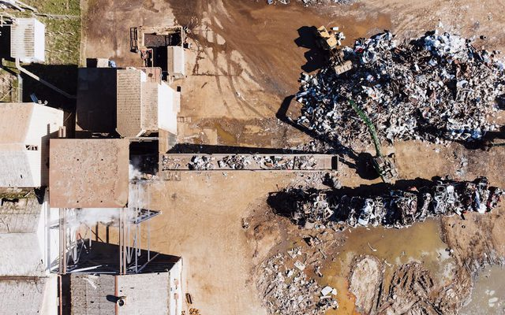
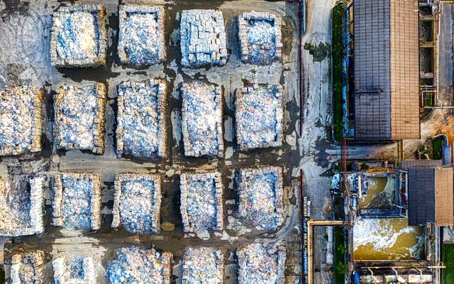
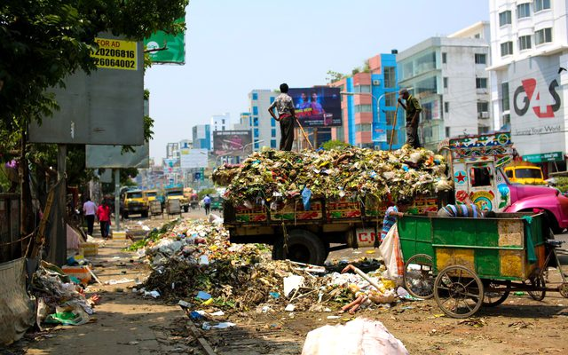
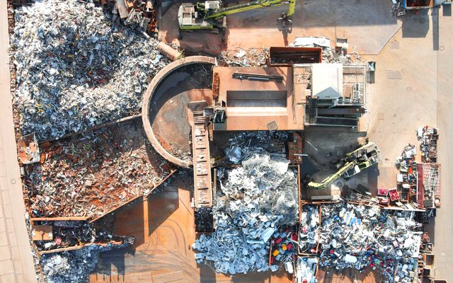
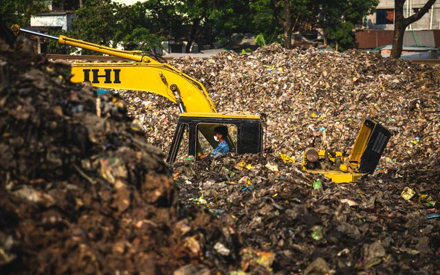
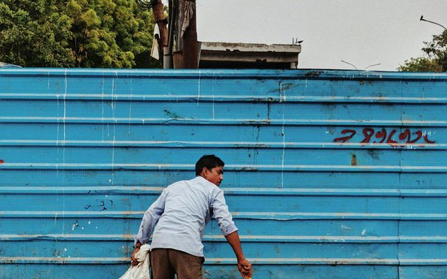
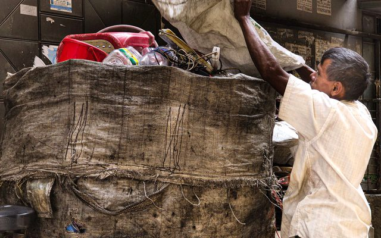
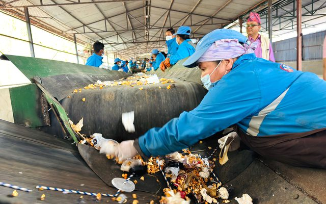
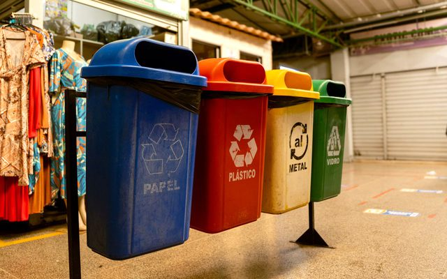
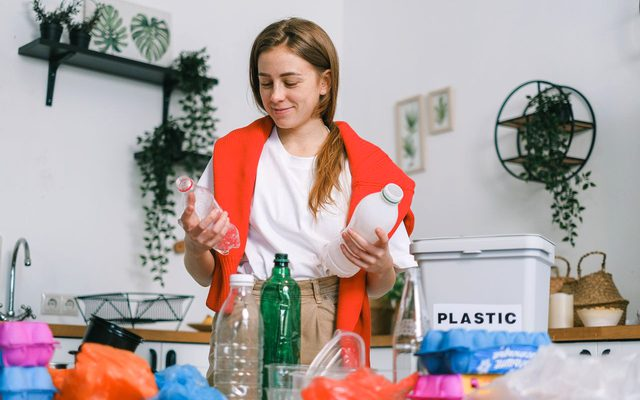
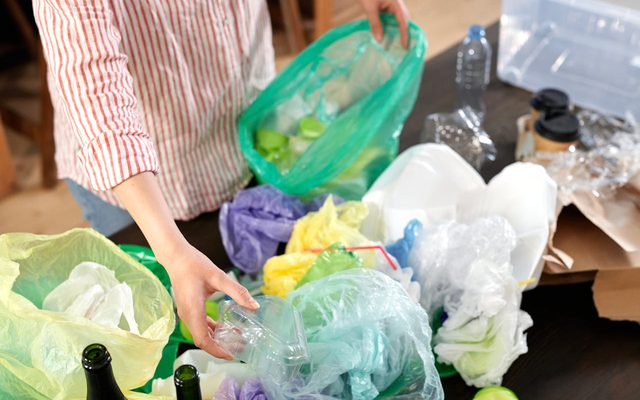
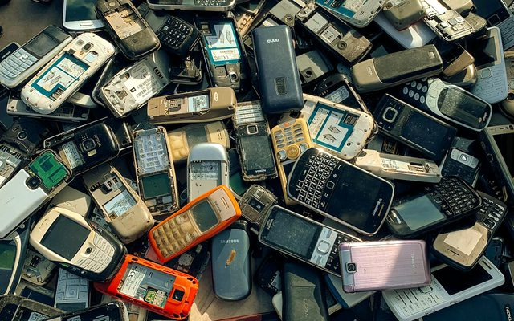
Links open external websites. Coal Controller Organisation does not endorse third-party content.


.png)

.png)
Disclaimer: Inclusion of an agency on this list does not constitute endorsement, empanelment, or recommendation by the Coal Controller Organisation or the Ministry of Coal, Government of India. Mine owners and project proponents are advised to conduct their own due diligence process before engaging any agency.
Disclaimer: Inclusion of an expert does not constitute endorsement, empanelment, or recommendation by the Coal Controller Organisation or the Ministry of Coal, Government of India. Users are advised to independently verify credentials and suitability before engaging any individual.